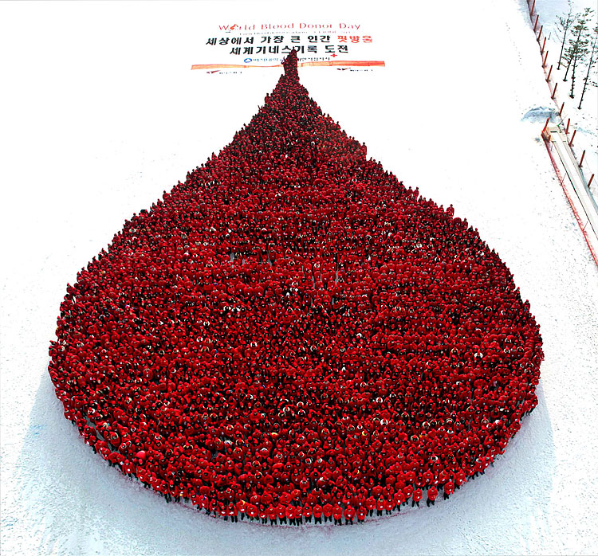

Pull a silly face!
Don't we look lovely?
Lucky I'm not in it...
How we see images
- detail
- shapes
- brightness
- colour
Pixels: how your computer sees images
8th October 2013
Edwin Tay
What is a pixel?
- the smallest controllable point in a digital image
- represented as a dot or square
- store some information about a "section" of the image
The world's biggest blood drop

Every person is a pixel
- each person holds a square
- squares are a controllable point in the aerial image
Image quality
- number of pixels in an image is called resolution
- more pixels means higher quality image
- every detail is a pixel
- more pixels gives more details
Image quality: an example
TODO: High resolution image
Changing resolutions...
Intrapolation
- high resolution to a low resolution
- takes more detail and ends up with less
- you lose information but the process is accurate
- requires less information and space to store image
Extrapolation
- low resolution to a high resolution
- tries to create more detail from less detail
- cannot accurately "invent" detail out of nowhere
- extrapolation creates images that don't look so nice
What about colour and brightness?
How do we know about brightness?
- how many pixels influences quality
- how do pixels influence brightness?
- what do pixels store as information about brightness?
On or off...
- initially pixels could either be "on" or "off"
- "on" would make the pixel black
- "off" would leave the pixel white
- images with "on"/"off" pixels are called monochrome images
Who remembers the GameBoy?
Different levels of "on"
- have 256 levels of "on"
- 0 is off and is white
- 255 is on and is black
- which leaves us with 254 shades of grey
- these images are called grayscale images
Storing colour
- break images up into three components
- the components each are a red, green and blue
- there can be 0 to 255 values of each component
- higher amounts of a component means more of that colour
- 0 of each component is black
- 255 of each component is white
- this model is called the red-green-blue (RGB) model
RGB: An example
TODO: Add in RGB images
RGB: An example
TODO: Animation
RGB: An example
TODO: Animation
RGB: An example
TODO: Animation
Weaknesses of RGB
- can RGB represent every colour?
- how can we represent transparency?
- how easy is it to print using RGB?
Other ways to think about colour
- printers use Cyan, Magenta, Yellow and Black (CMYK)
- Red, Green, Blue, Alpha (RGBA) is another colour scheme to represent transparency
- the Wide Gamut system can represent a larger range of colours then RGB
Summing up...
- pixels: dots that remember information about the image
- the more pixels you have, the more detailed an image is
- creating pixels isn't accurate
- pixels store colour information as separate red, green, blue components